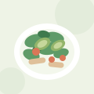
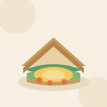
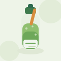

牛油果鸡胸沙拉
低温慢煮鸡胸 · 牛油果 · 混合生菜
与方案 A 使用同一套图标造型，但改为内联 SVG 雪碧图：整页只定义一次
<symbol>，各处通过 <use href="#id"> 复用。
SVG 矢量无损缩放，颜色通过 fill: currentColor 交给 CSS 控制。
今天想吃点什么？
低卡轻食 · 现做现送 · 30 分钟达

低温慢煮鸡胸 · 牛油果 · 混合生菜

现烤全麦吐司 · 溏心蛋 · 生菜番茄

冷压鲜榨 · 0 添加糖 · 300ml